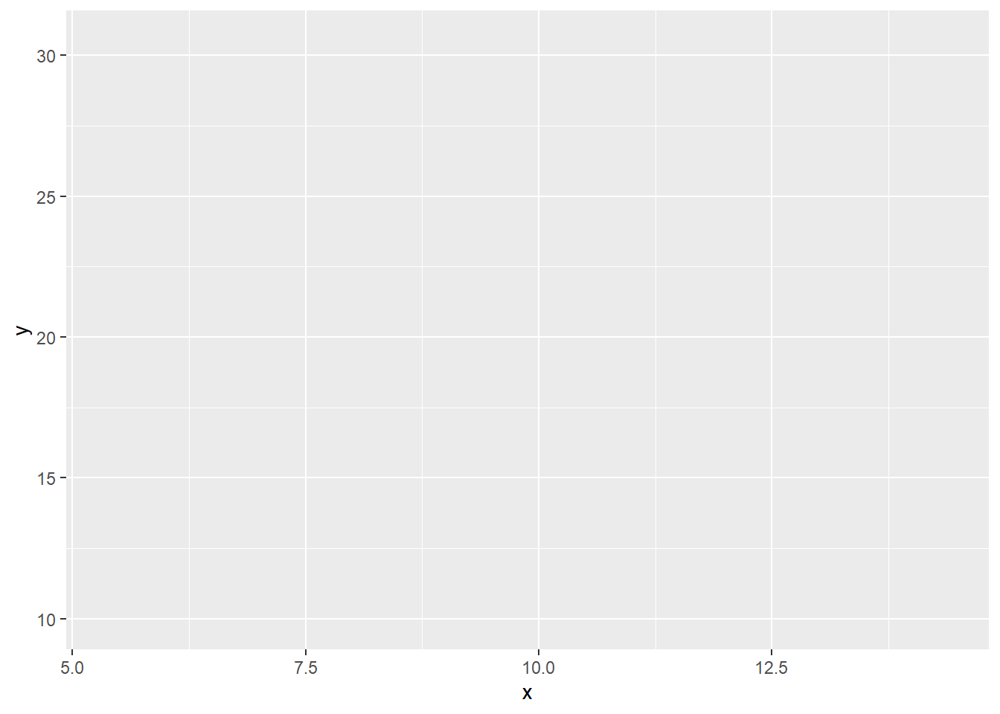
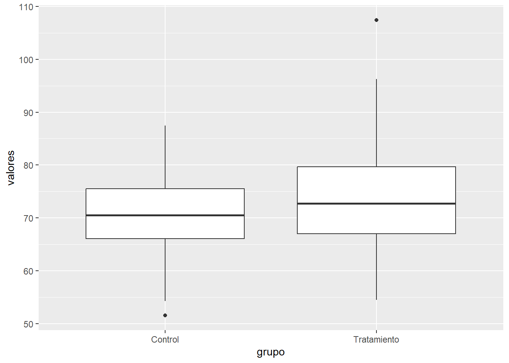

En el contexto del análisis estadístico moderno, la visualización de datos constituye una herramienta esencial para la exploración, interpretación y comunicación de resultados. Si bien el sistema gráfico base de R ofrece una amplia variedad de funciones para la creación de gráficos, la creciente demanda de visualizaciones más sofisticadas, reproducibles y estéticamente profesionales ha impulsado el desarrollo de herramientas especializadas, entre las cuales destaca el paquete ggplot2 (Wickham, 2016).
ggplot2 es un paquete de R diseñado para la creación de gráficos estadísticos de alta calidad, basado en la “gramática de los gráficos” (Grammar of Graphics) propuesta por Wilkinson (2005). Esta gramática proporciona un marco conceptual que permite construir visualizaciones complejas a partir de componentes independientes y combinables, facilitando la personalización y la integración de múltiples capas de información en un solo gráfico.
El uso de ggplot2 se ha consolidado como un estándar en la comunidad científica y profesional debido a varias razones fundamentales:
Claridad y profesionalismo: Los gráficos generados con ggplot2 cumplen con los estándares visuales requeridos en publicaciones científicas, reportes técnicos y presentaciones académicas.
Flexibilidad y modularidad: La estructura de ggplot2 permite añadir, modificar o eliminar elementos gráficos de manera sencilla, adaptando cada visualización a las necesidades específicas del análisis.
Reproducibilidad: La sintaxis declarativa de ggplot2 facilita la documentación y replicación exacta de los gráficos, aspecto crucial en la investigación científica y la docencia.
Integración con el ecosistema tidyverse: ggplot2 forma parte del conjunto de paquetes tidyverse, lo que permite una integración fluida con herramientas para manipulación, transformación y modelado de datos (Wickham et al., 2019).
En síntesis, ggplot2 es una herramienta indispensable para quienes buscan comunicar resultados estadísticos de manera clara, precisa y profesional. Su adopción en entornos académicos y profesionales responde a la necesidad de contar con visualizaciones que no solo sean informativas, sino también estéticamente adecuadas para su inclusión en documentos formales y publicaciones científicas.
14.1 Ventajas principales de ggplot2
El paquete ggplot2 se ha consolidado como una de las herramientas más utilizadas para la visualización de datos en R, tanto en el ámbito académico como profesional. Su popularidad se debe a una serie de ventajas que lo distinguen frente a otros sistemas gráficos, especialmente en el contexto del análisis estadístico y la elaboración de documentos formales.
Modularidad y gramática de gráficos: ggplot2 está basado en la “gramática de los gráficos” (Grammar of Graphics), lo que permite construir visualizaciones a partir de componentes independientes: datos, mapeos estéticos, geometrías, escalas, temas y capas adicionales. Esta modularidad facilita la creación de gráficos complejos de manera incremental, permitiendo añadir o modificar elementos sin rehacer el gráfico desde cero (Wilkinson, 2005; Wickham, 2016).
Flexibilidad y personalización: A diferencia del sistema gráfico base de R, ggplot2 ofrece una amplia gama de opciones para personalizar cada aspecto del gráfico, desde los colores y tipos de símbolos hasta la disposición de leyendas, títulos y escalas. Esta flexibilidad es fundamental para adaptar las visualizaciones a los estándares de publicaciones científicas y a las necesidades específicas de cada análisis (Wickham, 2016).
Resultados visuales profesionales: Los gráficos generados con ggplot2 presentan una estética cuidada y profesional por defecto, lo que facilita su inclusión directa en artículos científicos, reportes técnicos y presentaciones académicas. Además, la posibilidad de aplicar temas predefinidos o personalizados permite mantener la coherencia visual en todos los productos gráficos de un proyecto (Wickham, 2016).
Reproducibilidad y transparencia: La sintaxis declarativa de ggplot2 favorece la reproducibilidad de los análisis, ya que cada gráfico puede ser reconstruido exactamente a partir del código utilizado. Esto es especialmente relevante en la investigación científica, donde la transparencia y la replicabilidad son principios fundamentales (Wickham et al., 2019).
Integración con el ecosistema tidyverse: ggplot2 forma parte del tidyverse, un conjunto de paquetes diseñados para el manejo, transformación y modelado de datos en R. Esta integración permite una transición fluida desde la manipulación de datos hasta la visualización, optimizando el flujo de trabajo y reduciendo la posibilidad de errores (Wickham et al., 2019).
Comunidad activa y abundancia de recursos: La amplia adopción de ggplot2 ha dado lugar a una comunidad activa de usuarios y desarrolladores, lo que se traduce en una gran cantidad de recursos, tutoriales, ejemplos y extensiones disponibles para resolver dudas y ampliar las capacidades del paquete.
En conjunto, estas ventajas hacen de ggplot2 una herramienta indispensable para quienes buscan comunicar resultados estadísticos de manera clara, precisa y profesional, cumpliendo con los estándares de calidad exigidos en la ciencia y la industria.
14.2 Gramática de los Gráficos en ggplot2
La visualización de datos es una etapa fundamental en el análisis estadístico, ya que permite identificar patrones, tendencias y anomalías que pueden pasar desapercibidos en una inspección numérica (Cleveland, 1993; Tufte, 2001). En este contexto, ggplot2 se destaca por su enfoque basado en la “gramática de los gráficos” (Grammar of Graphics), un marco conceptual que facilita la construcción de visualizaciones claras, reproducibles y adaptadas a los estándares de la comunicación científica (Wilkinson, 2005; Wickham, 2016).
14.2.1 Principios conceptuales de la gramática de los gráficos
La gramática de los gráficos, propuesta originalmente por Wilkinson (2005), parte de la premisa de que toda visualización estadística puede descomponerse en un conjunto de componentes básicos. Este enfoque modular permite construir gráficos complejos a partir de la combinación sistemática de elementos independientes, lo que resulta especialmente útil para quienes se inician en la programación estadística, ya que reduce la complejidad y favorece la comprensión progresiva del proceso de visualización (Wickham, 2016).
Según Cleveland (1993), la claridad y la precisión en la representación gráfica son esenciales para evitar interpretaciones erróneas y comunicar los resultados de manera efectiva. Por ello, la gramática de los gráficos enfatiza la importancia de definir explícitamente cada elemento visual, asegurando que el gráfico resultante sea informativo y estéticamente adecuado (Tufte, 2001).
14.2.2 Componentes esenciales de un gráfico en ggplot2
A continuación se describen los principales componentes que conforman la gramática de los gráficos en ggplot2, siguiendo la estructura propuesta por Wilkinson (2005) y adaptada por Wickham (2016):
Datos: Constituyen el insumo fundamental de cualquier gráfico. En R, los datos suelen organizarse en data frames, lo que facilita su manipulación y visualización (Wickham & Grolemund, 2017).
Mapeos estéticos (aesthetics): Son las correspondencias entre las variables de los datos y las propiedades visuales del gráfico, como la posición en los ejes, el color, el tamaño o la forma de los elementos. Definir correctamente los mapeos es crucial para garantizar que la visualización transmita la información deseada (Wickham, 2016).
Geometrías (geoms): Representan los objetos gráficos que visualizan los datos, como puntos (geom_point()), líneas (geom_line()), barras (geom_bar()), cajas (geom_boxplot()), entre otros. La elección de la geometría depende del tipo de variable y del objetivo del análisis (Cleveland, 1993).
Transformaciones estadísticas (stats): Permiten aplicar cálculos o resúmenes estadísticos antes de la representación gráfica, como medias, medianas, conteos o ajustes de modelos. Por ejemplo, geom_smooth() puede añadir una línea de tendencia basada en un modelo de regresión (Wickham, 2016).
Escalas: Definen cómo se traducen los valores de las variables a propiedades visuales, por ejemplo, escalas de color, tamaño o forma. Las escalas permiten adaptar el gráfico a diferentes contextos y audiencias (Wilkinson, 2005).
Sistemas de coordenadas: Determinan el sistema de referencia utilizado para ubicar los elementos gráficos, siendo el cartesiano el más común, aunque también se pueden emplear coordenadas polares u otras transformaciones (Wickham, 2016).
Facetas: Permiten dividir el gráfico en subgráficos según los valores de una o más variables categóricas, facilitando la comparación visual entre grupos o condiciones experimentales (Wickham, 2016).
Temas: Controlan la apariencia general del gráfico, incluyendo el tipo y tamaño de fuente, colores de fondo, líneas de cuadrícula y otros elementos estéticos globales. La personalización de temas es fundamental para adaptar los gráficos a los estándares de publicaciones científicas (Tufte, 2001; Wickham, 2016).
14.2.3 Construcción secuencial y sintaxis básica de gráficos en ggplot2
La sintaxis de ggplot2 se basa en la adición secuencial de capas, donde cada componente se incorpora mediante el operador +. Este enfoque modular permite construir gráficos de manera progresiva, añadiendo o modificando elementos según las necesidades del análisis (Wickham, 2016).
Ejemplo con datos simulados:
# Cargar el paquete ggplot2library(ggplot2)# Simulación de datosset.seed(123)x <-rnorm(100, mean =10, sd =2)y <-2* x +rnorm(100, 0, 3)datos <-data.frame(x = x, y = y)# Construcción secuencial de un gráfico de dispersiónggplot(datos, aes(x = x, y = y)) +# Inicialización y mapeo estéticogeom_point() # Capa de geometría: puntos
Explicación:
ggplot(datos, aes(x = x, y = y)) inicializa el objeto gráfico y define que la variable x se mapea al eje horizontal y y al eje vertical.
geom_point() añade la capa de puntos, representando cada observación como un símbolo en el plano cartesiano.
El operador + permite añadir más capas o personalizaciones de manera sencilla y ordenada.
14.2.4 Ejemplo avanzado: Incorporación de capas y personalización
La verdadera potencia de ggplot2 se manifiesta al combinar múltiples capas y personalizaciones en un solo gráfico. A continuación se muestra cómo añadir una línea de tendencia y personalizar etiquetas y temas, siguiendo las recomendaciones de claridad y economía visual de Tufte (2001):
ggplot(datos, aes(x = x, y = y)) +# Puntos personalizadosgeom_point(color ="navy", size =2) +# Línea de regresióngeom_smooth(method ="lm", color ="red", linetype ="dashed") +labs(title ="Relación entre X e Y",subtitle ="Ejemplo con datos simulados",x ="Variable X",y ="Variable Y" ) +# Tema profesional y limpiotheme_minimal(base_size =13)
Explicación:
geom_smooth(method = "lm", ...) añade una línea de regresión lineal con estilo personalizado, facilitando la interpretación de la tendencia general de los datos (Cleveland, 1993).
labs() permite definir títulos y etiquetas descriptivas, mejorando la claridad del gráfico.
theme_minimal() aplica un tema visual adecuado para presentaciones y publicaciones, siguiendo los principios de economía visual (Tufte, 2001).
14.2.5 Ventajas del enfoque modular y declarativo
El enfoque modular y declarativo de ggplot2 ofrece ventajas significativas para principiantes y usuarios avanzados:
Permite construir gráficos complejos de manera incremental y reproducible, facilitando el aprendizaje progresivo (Wickham, 2016).
Facilita la modificación y personalización de cada elemento visual, adaptando los gráficos a diferentes audiencias y contextos (Wilkinson, 2005).
Favorece la claridad y la transparencia en la comunicación de resultados, aspectos esenciales en la investigación científica y la docencia (Cleveland, 1993; Tufte, 2001).
14.3 Estructura y Flujo de Trabajo para la Construcción de Gráficos en ggplot2
La creación de gráficos profesionales en ggplot2 sigue un flujo de trabajo sistemático y reproducible, que facilita tanto el aprendizaje para principiantes como la producción de visualizaciones de alta calidad para informes y publicaciones científicas (Wickham, 2016; Wilkinson, 2005). Comprender este workflow es esencial para aprovechar al máximo las capacidades del paquete y garantizar la claridad y la coherencia en la comunicación de resultados.
14.3.1 Preparación y organización de los datos
El primer paso en cualquier proceso de visualización es la preparación de los datos. En R, los datos suelen organizarse en data frames, lo que permite una manipulación eficiente y una integración directa con ggplot2 (Wickham & Grolemund, 2017). Es fundamental asegurarse de que los datos estén limpios, estructurados y listos para ser mapeados a los elementos visuales del gráfico.
Ejemplo:
# Simulación de datos para el ejemploset.seed(123)x <-rnorm(100, mean =10, sd =2)y <-2* x +rnorm(100, 0, 3)datos <-data.frame(x = x, y = y)
Explicación: Se simulan dos variables numéricas (x e y) y se almacenan en un data frame llamado datos, siguiendo las mejores prácticas de organización de datos para análisis estadístico (Wickham & Grolemund, 2017).
14.3.2 Inicialización del objeto gráfico y definición de mapeos estéticos
El flujo de trabajo (workflow) de ggplot2 comienza con la inicialización del objeto gráfico mediante la función ggplot(), donde se especifica el data frame y los mapeos estéticos principales a través de la función aes(). Los mapeos estéticos determinan cómo se asignan las variables de los datos a las propiedades visuales del gráfico, como los ejes, el color, el tamaño o la forma (Wickham, 2016).
Ejemplo:
# Inicialización del objeto gráfico con mapeos estéticosgrafico_base <-ggplot(datos, aes(x = x, y = y))grafico_base

Explicación: Se crea un objeto gráfico vacío, donde se define que la variable x se ubicará en el eje horizontal y y en el eje vertical. Este objeto sirve como base para añadir capas adicionales.
14.3.3 Adición de geometrías para la representación visual
El siguiente paso consiste en añadir una o más geometrías, que determinan cómo se visualizarán los datos. Las geometrías más comunes incluyen puntos (geom_point()), líneas (geom_line()), barras (geom_bar()) y cajas (geom_boxplot()). Cada geometría puede personalizarse mediante argumentos adicionales, como color, tamaño o forma (Cleveland, 1993; Wickham, 2016).
Ejemplo:
# Adición de una geometría de puntosgrafico_dispersion <- grafico_base +geom_point()grafico_dispersion
Explicación:geom_point() añade una capa de puntos, representando cada observación como un símbolo en el plano cartesiano. El operador + permite añadir más capas o personalizaciones de manera ordenada y progresiva.
14.3.4 Personalización de etiquetas, títulos y leyendas
Para mejorar la claridad y la interpretación del gráfico, es recomendable añadir títulos, subtítulos, etiquetas a los ejes y leyendas mediante la función labs(). Una correcta rotulación facilita la comunicación de los resultados y evita ambigüedades (Tufte, 2001).
Ejemplo:
# Personalización de etiquetas y títulosgrafico_etiquetado <- grafico_dispersion +labs(title ="Gráfico de dispersión básico",subtitle ="Ejemplo con datos simulados",x ="Variable X",y ="Variable Y" )grafico_etiquetado
Explicación:labs() permite definir el título principal, el subtítulo y las etiquetas de los ejes, mejorando la presentación y la comprensión del gráfico.
14.3.5 Aplicación de temas y ajustes estéticos
Ggplot2 ofrece una variedad de temas predefinidos que modifican la apariencia general del gráfico, adaptándolo a diferentes contextos y estándares de publicación. Los temas controlan aspectos como el fondo, las fuentes, las líneas de cuadrícula y los colores (Wickham, 2016; Tufte, 2001).
Ejemplo:
# Aplicación de un tema profesionalgrafico_final <- grafico_etiquetado +theme_minimal(base_size =13)grafico_final
Explicación:theme_minimal() aplica un estilo visual limpio y profesional, adecuado para presentaciones y publicaciones científicas. El argumento base_size ajusta el tamaño base de las fuentes, facilitando la lectura.
14.3.6 Exportación y reutilización del gráfico
Una vez finalizado el gráfico, es posible exportarlo a diferentes formatos (PNG, PDF, SVG) utilizando funciones como ggsave(), lo que facilita su inclusión en documentos formales, reportes técnicos y publicaciones científicas (Wickham, 2016).
Ejemplo:
# Exportar el gráfico a un archivo PNGggsave("grafico_dispersión.png", plot = grafico_final, width =6, height =4, dpi =300)
Explicación:ggsave() permite guardar el gráfico en un archivo con la resolución y dimensiones especificadas, asegurando la calidad necesaria para su uso profesional.
14.3.7 Resumen del flujo de trabajo en ggplot2
El flujo de trabajo recomendado para la construcción de gráficos en ggplot2 puede resumirse en los siguientes pasos:
Preparar y organizar los datos en un formato adecuado (data frame).
Inicializar el objeto gráfico con los mapeos estéticos principales.
Añadir geometrías para representar los datos visualmente.
Personalizar etiquetas, títulos y leyendas para mejorar la claridad.
Aplicar temas y ajustes estéticos para adaptar el gráfico a los estándares profesionales.
Exportar y reutilizar el gráfico en diferentes formatos según las necesidades del proyecto.
Este flujo de trabajo modular y progresivo no solo facilita el aprendizaje para principiantes, sino que también garantiza la reproducibilidad, la claridad y la calidad en la comunicación de resultados estadísticos (Wickham, 2016; Wilkinson, 2005; Tufte, 2001).
14.4 Creación de gráficos exploratorios y descriptivos en ggplot2
El paquete ggplot2 proporciona una sintaxis coherente y modular para la creación de diferentes tipos de gráficos estadísticos en R. Cada visualización requiere una estructura específica de datos, generalmente en formato data frame, y utiliza funciones geométricas particulares que determinan cómo se representarán los datos. La construcción de estos gráficos sigue el workflow profesional establecido, donde primero se preparan los datos, luego se inicializa el objeto gráfico con ggplot(), se añaden las geometrías correspondientes y finalmente se personalizan los elementos visuales según sea necesario (Wickham, 2016).
14.4.1 Gráficos de barras con geom_bar()
La función geom_bar() es la geometría principal para crear gráficos de barras a partir de variables categóricas. Esta función cuenta automáticamente las frecuencias de cada categoría y las representa como barras verticales.
# Simulación de datos categóricosset.seed(123)grupo <-sample(c("A", "B", "C"), size =200, replace =TRUE)datos_cat <-data.frame(grupo = grupo)# Gráfico de barrasggplot(datos_cat, aes(x = grupo)) +geom_bar()
Explicación:
Se crea un data frame con una variable categórica (grupo).
ggplot(datos_cat, aes(x = grupo)) inicializa el gráfico mapeando la variable al eje X.
geom_bar() añade las barras, calculando automáticamente las frecuencias.
14.4.2 Histogramas con geom_histogram()
La función geom_histogram() genera histogramas para variables numéricas continuas, dividiendo los datos en intervalos (bins) y contando la frecuencia en cada uno.
# Simulación de datos numéricosset.seed(123)valores <-rnorm(200, mean =70, sd =10)datos_hist <-data.frame(valores = valores)# Histogramaggplot(datos_hist, aes(x = valores)) +geom_histogram(bins =15)
Explicación:
Se crea un data frame con una variable numérica (valores).
ggplot(datos_hist, aes(x = valores)) mapea la variable al eje X.
geom_histogram() crea el histograma, especificando el número de bins deseado.
14.4.3 Gráficos de dispersión con geom_point()
La función geom_point() crea gráficos de dispersión para analizar la relación entre dos variables numéricas, representando cada observación como un punto en el plano cartesiano.
# Simulación de datos correlacionadosset.seed(123)x <-rnorm(100, mean =10, sd =2)y <-2* x +rnorm(100, 0, 3)datos_disp <-data.frame(x = x, y = y)# Gráfico de dispersiónggplot(datos_disp, aes(x = x, y = y)) +geom_point()
Explicación:
Se crea un data frame con dos variables numéricas (x e y).
ggplot(datos_disp, aes(x = x, y = y)) mapea las variables a los ejes X e Y.
geom_point() representa cada par de valores como un punto.
14.4.4 Boxplots con geom_boxplot()
La función geom_boxplot() construye diagramas de caja para comparar la distribución de una variable numérica entre diferentes grupos o categorías.
# Simulación de datos para dos gruposset.seed(123)grupo <-factor(rep(c("Control", "Tratamiento"), each =100))valores <-c(rnorm(100, 70, 8), rnorm(100, 75, 10))datos_box <-data.frame(grupo = grupo, valores = valores)# Boxplotggplot(datos_box, aes(x = grupo, y = valores)) +geom_boxplot()

Explicación:
Se crea un data frame con una variable categórica (grupo) y una numérica (valores).
ggplot(datos_box, aes(x = grupo, y = valores)) mapea el grupo al eje X y los valores al eje Y.
geom_boxplot() genera los diagramas de caja para cada grupo.
14.5 Personalización de gráficos en ggplot2
La personalización es una de las fortalezas principales de ggplot2, permitiendo adaptar cada gráfico a los estándares de comunicación científica, a las necesidades de la audiencia y a los requisitos de publicaciones profesionales. El flujo de trabajo de personalización en ggplot2 es progresivo y modular: cada aspecto visual puede ajustarse mediante capas adicionales o argumentos específicos, lo que facilita la reproducibilidad y la claridad en la presentación de resultados (Wickham, 2016).
14.5.1 Modificación de colores y escalas
El control de los colores es fundamental para mejorar la interpretación, la accesibilidad y la estética de los gráficos. ggplot2 permite modificar los colores de los elementos gráficos tanto de forma automática como manual, utilizando funciones de escala específicas. Para variables categóricas, se emplea scale_fill_manual() (relleno) o scale_color_manual() (bordes, líneas y puntos). Para variables continuas, existen escalas como scale_fill_gradient() o scale_color_gradient(), que permiten definir paletas de colores personalizadas o predefinidas.
# Simulación de los datosset.seed(123)grupo <-factor(rep(c("Control", "Tratamiento"), each =100))valores <-c(rnorm(100, 70, 8), rnorm(100, 75, 10))datos_box <-data.frame(grupo = grupo, valores = valores)# Ejemplo de personalización de colores en un boxplotggplot(datos_box, aes(x = grupo, y = valores, fill = grupo)) +geom_boxplot(color ="gray30", outlier.colour ="red", outlier.shape =8) +scale_fill_manual(values =c("skyblue", "salmon")) +scale_color_manual(values =c("gray30", "gray30")) +labs(title ="Boxplot personalizado por grupo")
Explicación:
Se crea un data frame con variables categórica y numérica.
aes(fill = grupo) mapea el color de relleno a la variable de grupo.
geom_boxplot() permite personalizar el color del borde y el estilo de los valores atípicos.
scale_fill_manual() asigna colores específicos a cada grupo.
scale_color_manual() ajusta el color del borde de las cajas.
Para variables continuas, se puede utilizar una escala de gradiente:
# Simulación de los datosset.seed(123)x <-rnorm(100)y <-2* x +rnorm(100)z <-rnorm(100, mean =50, sd =10)datos_disp <-data.frame(x = x, y = y, z = z)# Ejemplo de gradiente de color en un gráfico de dispersiónggplot(datos_disp, aes(x = x, y = y, color = z)) +geom_point(size =3) +scale_color_gradient(low ="yellow", high ="blue") +labs(title ="Gradiente de color según variable continua")
Explicación:
Se crea un data frame con dos variables numéricas y una variable adicional para el color.
aes(color = z) mapea la variable continua al color de los puntos.
scale_color_gradient() define los colores mínimo y máximo del gradiente.
14.5.2 Etiquetas, títulos y leyendas
La función labs() es la herramienta principal para añadir y personalizar títulos, subtítulos, etiquetas de ejes y leyendas. Una correcta rotulación es esencial para la interpretación y la comunicación efectiva de los resultados. Además, la posición y el formato de la leyenda pueden ajustarse mediante argumentos en la función theme().
# Ejemplo de personalización de etiquetas y leyendasggplot(datos_box, aes(x = grupo, y = valores, fill = grupo)) +geom_boxplot() +labs(title ="Comparación de valores por grupo",subtitle ="Datos simulados",x ="Grupo experimental",y ="Medición",fill ="Condición experimental" ) +theme(legend.position ="bottom", legend.title =element_text(face ="bold"))
Explicación:
labs() define el título, subtítulo, etiquetas de ejes y el texto de la leyenda.
theme(legend.position = "bottom") coloca la leyenda debajo del gráfico.
legend.title = element_text(face = "bold") resalta el título de la leyenda.
14.5.3 Aplicación y personalización de temas
Los temas en ggplot2 controlan la apariencia global del gráfico, incluyendo el fondo, las fuentes, las líneas de cuadrícula y otros elementos estéticos. Existen temas predefinidos como theme_minimal(), theme_classic(), theme_bw(), y theme_light(), que pueden ser utilizados directamente o modificados mediante la función theme() para ajustar detalles específicos. La personalización de temas es clave para adaptar los gráficos a los estándares de publicaciones científicas y presentaciones profesionales (Tufte, 2001; Wickham, 2016).
# Ejemplo de aplicación y ajuste de un temaggplot(datos_box, aes(x = grupo, y = valores, fill = grupo)) +geom_boxplot() +theme_minimal(base_size =14) +theme(plot.title =element_text(face ="bold", color ="navy", size =18),plot.subtitle =element_text(face ="italic", color ="gray40"),axis.title =element_text(face ="italic", size =14),axis.text =element_text(color ="gray30"),panel.grid.major =element_line(color ="gray80"),panel.grid.minor =element_blank(),legend.position ="right" )
Explicación:
Se aplica el tema theme_minimal() para un estilo limpio y profesional.
plot.title y plot.subtitle ajustan el estilo y color de los títulos.
axis.title y axis.text modifican el estilo y tamaño de los textos de ejes.
panel.grid.major y panel.grid.minor controlan la visibilidad y color de las líneas de cuadrícula.
legend.position define la ubicación de la leyenda.
14.5.4 Personalización avanzada: fuentes, márgenes y elementos gráficos
ggplot2 permite un control detallado sobre elementos como el tipo y tamaño de fuente, los márgenes del gráfico, la orientación de las etiquetas y la visibilidad de los ejes. Estas opciones avanzadas se gestionan principalmente a través de la función theme(), lo que permite adaptar el gráfico a los requisitos específicos de cada publicación o presentación.
# Ejemplo de personalización avanzadaggplot(datos_box, aes(x = grupo, y = valores, fill = grupo)) +geom_boxplot() +theme_classic(base_size =13) +theme(plot.margin =margin(20, 20, 20, 20),axis.text.x =element_text(angle =45, hjust =1),axis.line =element_line(color ="black", linewidth =1),legend.background =element_rect(fill ="gray95", color ="gray80") )
Explicación:
plot.margin ajusta los márgenes del gráfico.
axis.text.x rota las etiquetas del eje X para mejorar la legibilidad.
axis.line resalta los ejes con líneas más gruesas y visibles.
legend.background modifica el fondo de la leyenda.
La personalización progresiva y modular de los gráficos en ggplot2 permite adaptar cada visualización a los estándares de comunicación científica y a las necesidades específicas de cada proyecto, garantizando resultados reproducibles y de alta calidad (Wickham, 2016).
14.6 Uso de facetas para comparación de grupos en ggplot2
Las facetas en ggplot2 permiten dividir un gráfico en múltiples paneles según los valores de una o más variables categóricas, facilitando la comparación visual entre subgrupos o condiciones experimentales. Esta funcionalidad es especialmente útil en el análisis exploratorio de datos, ya que permite identificar patrones, diferencias y tendencias específicas en cada grupo sin perder la coherencia visual y la escala común entre paneles (Wickham, 2016).
El flujo de trabajo para el uso de facetas en ggplot2 consiste en preparar los datos con las variables categóricas de interés, construir el gráfico base y añadir la capa de facetas mediante las funciones facet_wrap() o facet_grid(). Estas funciones ofrecen flexibilidad para organizar los paneles en filas, columnas o matrices, y permiten personalizar etiquetas, escalas y disposición de los subgráficos.
14.6.1 Facetado simple con facet_wrap()
La función facet_wrap() divide el gráfico en paneles independientes según los valores de una sola variable categórica. Los paneles se organizan automáticamente en una cuadrícula, lo que resulta útil para comparar múltiples niveles de una variable.
# Simulación de datos con una variable de facetasset.seed(123)grupo <-sample(c("A", "B", "C"), size =150, replace =TRUE)categoria <-sample(c("X", "Y"), size =150, replace =TRUE)valor <-rnorm(150, mean =50, sd =10)datos_facet <-data.frame(grupo = grupo, categoria = categoria, valor = valor)# Gráfico de dispersión facetado por grupoggplot(datos_facet, aes(x = categoria, y = valor)) +geom_boxplot(fill ="lightblue") +facet_wrap(~ grupo)
Explicación
Se crea un data frame con una variable categórica para las facetas (grupo), una variable categórica para el eje X (categoria) y una variable numérica (valor).
ggplot(datos_facet, aes(x = categoria, y = valor)) inicializa el gráfico.
geom_boxplot() representa los datos como diagramas de caja.
facet_wrap(~ grupo) divide el gráfico en paneles independientes para cada nivel de la variable grupo.
El argumento nrow o ncol en facet_wrap() permite controlar el número de filas o columnas de la cuadrícula de paneles.
14.6.2 Facetado múltiple con facet_grid()
La función facet_grid() permite crear una matriz de paneles utilizando dos variables categóricas, una para las filas y otra para las columnas. Esta organización es ideal para comparar simultáneamente los efectos de dos factores sobre la variable de interés.
# Gráfico de dispersión facetado por grupo y categoríaggplot(datos_facet, aes(x = valor)) +geom_histogram(bins =10, fill ="salmon", color ="white") +facet_grid(grupo ~ categoria)
Explicación:
Se utiliza el mismo data frame con dos variables categóricas (grupo y categoria).
geom_histogram() representa la distribución de la variable numérica.
facet_grid(grupo ~ categoria) crea una matriz de paneles, donde las filas corresponden a los niveles de grupo y las columnas a los niveles de categoria.
El uso de facet_grid() es especialmente útil cuando se desea analizar la interacción entre dos factores y observar cómo varía la distribución de la variable numérica en cada combinación de niveles.
14.6.3 Personalización de facetas
ggplot2 permite personalizar las etiquetas de los paneles, la disposición de los subgráficos y la independencia de las escalas entre paneles. Los argumentos labeller, scales y strip.position en las funciones de facetas ofrecen un control detallado sobre la presentación final.
# Personalización avanzada de facetasggplot(datos_facet, aes(x = categoria, y = valor, fill = categoria)) +geom_boxplot() +facet_wrap(~ grupo, nrow =1, labeller = label_both,strip.position ="bottom", scales ="free_y") +theme(strip.background =element_rect(fill ="gray90"),strip.text =element_text(face ="bold", color ="navy"))
Explicación:
nrow = 1 organiza los paneles en una sola fila.
labeller = label_both muestra el nombre de la variable y el valor en la etiqueta del panel.
strip.position = "bottom" coloca las etiquetas de los paneles en la parte inferior.
scales = "free_y" permite que cada panel tenga su propia escala en el eje Y.
theme() personaliza el fondo y el texto de las etiquetas de los paneles.
La personalización de facetas es clave para mejorar la legibilidad y la interpretación de los gráficos comparativos, especialmente cuando se trabaja con conjuntos de datos complejos o con múltiples niveles de agrupamiento.
El uso de facetas en ggplot2, mediante facet_wrap() y facet_grid(), es una herramienta poderosa para la exploración visual y la comunicación de resultados en análisis estadístico, permitiendo comparar grupos de manera clara, eficiente y reproducible (Wickham, 2016).
14.7 Comparación entre ggplot2 y el sistema gráfico base de R
La comparación entre ggplot2 y el sistema gráfico base de R es fundamental para quienes inician en la visualización de datos, ya que permite comprender las ventajas y limitaciones de cada enfoque. Para garantizar una comparación justa, se utilizará el conjunto de datos iris, uno de los más clásicos y ampliamente utilizados en la literatura estadística y en la enseñanza de R. Este conjunto contiene mediciones de longitud y ancho de sépalos y pétalos de tres especies de flores, y es ideal para ilustrar gráficos de dispersión con agrupamiento por especie (Anderson, 1935).
14.7.1 Sintaxis y filosofía
ggplot2 se basa en la gramática de los gráficos, permitiendo construir visualizaciones complejas mediante la combinación modular de componentes. Su sintaxis es declarativa, lo que facilita la especificación de qué se desea visualizar.
El sistema gráfico base utiliza una sintaxis imperativa, donde cada paso debe ser definido explícitamente. Es más directo para gráficos simples, pero menos flexible para personalizaciones avanzadas.
Ejemplo comparativo:
# 1. ggplot2library(ggplot2)ggplot(iris, aes(x = Sepal.Length, y = Sepal.Width, color = Species)) +geom_point(size =2) +labs(title ="Relación entre longitud y ancho del sépalo",x ="Longitud del sépalo (cm)",y ="Ancho del sépalo (cm)",color ="Especie" ) +theme_minimal(base_size =13)
# 2. Sistema gráfico baseplot(iris$Sepal.Length, iris$Sepal.Width,col =as.numeric(iris$Species),pch =16,main ="Relación entre longitud y ancho del sépalo",xlab ="Longitud del sépalo (cm)",ylab ="Ancho del sépalo (cm)")legend("topright",legend =levels(iris$Species),col =1:3,pch =16,title ="Especie")
Ambos gráficos utilizan el mismo conjunto de datos y presentan título, etiquetas de ejes y leyenda, lo que permite una comparación equitativa de la sintaxis y el resultado visual.
14.7.2 Flexibilidad y personalización
ggplot2 permite personalizar cada elemento del gráfico de manera eficiente, utilizando capas y funciones específicas para colores, escalas, temas y leyendas.
El sistema gráfico base requiere argumentos adicionales y, en ocasiones, funciones externas para lograr el mismo nivel de personalización, lo que puede dificultar la reproducibilidad y la claridad del código.
Ejemplo:
# 1. ggplot2ggplot(iris, aes(x = Sepal.Length, y = Sepal.Width, color = Species)) +geom_point(size =2) +scale_color_manual(values =c("red", "green", "blue")) +labs(title ="Relación entre longitud y ancho del sépalo",subtitle ="Datos del conjunto iris",x ="Longitud del sépalo (cm)",y ="Ancho del sépalo (cm)",color ="Especie" ) +theme_minimal(base_size =13)
# 2. Sistema gráfico baseplot(iris$Sepal.Length, iris$Sepal.Width,col =c("red", "green", "blue")[as.numeric(iris$Species)],pch =16,main ="Relación entre longitud y ancho del sépalo",xlab ="Longitud del sépalo (cm)",ylab ="Ancho del sépalo (cm)")legend("topright",legend =levels(iris$Species),col =c("red", "green", "blue"),pch =16,title ="Especie")mtext("Datos del conjunto iris", side =3, line =0.5, cex =0.9, col ="gray40")
Ambos gráficos incluyen personalización de colores, subtítulo, título, etiquetas de ejes y leyenda, asegurando una comparación justa.
14.7.3 Resumen comparativo
A continuación se presenta un cuadro comparativo que integra los aspectos más relevantes discutidos, facilitando la consulta rápida y la toma de decisiones informada:
Característica
ggplot2
Sistema gráfico base
Sintaxis
Declarativa, modular, basada en la gramática de los gráficos
Imperativa, secuencial
Flexibilidad
Alta, personalización eficiente y detallada
Limitada, requiere mayor esfuerzo
Estética
Moderna y profesional por defecto, fácil de mantener entre gráficos
Tradicional, requiere ajustes manuales
Flujo de trabajo
Modular, reproducible y documentado; facilita colaboración y revisión
Menos modular, menos reproducible
Reutilización
Alta, gracias a la estructura por capas y la posibilidad de guardar objetos gráficos
Baja, requiere repetir comandos y ajustes
Curva de aprendizaje
Inicialmente más pronunciada, pero ventajosa en proyectos complejos
Más sencilla para gráficos básicos
Integración
Excelente con el ecosistema tidyverse y flujos de trabajo modernos
Integración limitada con otros paquetes
Comunidad y recursos
Amplia documentación, comunidad activa y abundantes ejemplos
Documentación tradicional, menos recursos
En conclusión, ggplot2 es la opción preferente para la elaboración de gráficos complejos, personalizados y de alta calidad, especialmente en contextos académicos y científicos donde la reproducibilidad, la estética y la flexibilidad son prioritarias. El sistema gráfico base de R, por su parte, sigue siendo útil para la creación rápida de gráficos exploratorios y para usuarios que requieren soluciones sencillas y directas, o que priorizan la inmediatez sobre la personalización (Murrell, 2018; Wickham, 2016).
14.8 Material de apoyo y paquetes adicionales recomendados
El aprendizaje y perfeccionamiento en la visualización de datos con ggplot2 puede potenciarse mediante el acceso a recursos especializados y la integración de paquetes adicionales que amplían las capacidades del entorno gráfico en R. A continuación, se presentan recomendaciones de materiales de apoyo y herramientas complementarias, útiles tanto para quienes inician como para usuarios avanzados.
14.8.1 Recursos para profundizar en ggplot2
El ecosistema de R y ggplot2 cuenta con una amplia variedad de materiales didácticos, manuales y cursos en línea que facilitan la adquisición de competencias en visualización de datos:
Documentación oficial de ggplot2: El sitio oficial del paquete ofrece una referencia completa de funciones, ejemplos y guías de uso, actualizadas conforme a las nuevas versiones (Wickham, 2016). La documentación es un recurso esencial para comprender a fondo las capacidades del paquete. https://ggplot2.tidyverse.org/
Libros especializados: ggplot2: Elegant Graphics for Data Analysis (Wickham, 2016) es la obra de referencia para comprender la filosofía y el uso avanzado del paquete. Este libro proporciona una base sólida para la creación de gráficos complejos y personalizados.
Cursos y tutoriales en línea: Plataformas como DataCamp, Coursera y edX ofrecen cursos interactivos sobre visualización de datos con R y ggplot2, que incluyen ejercicios prácticos y proyectos aplicados (Healy, 2018).
14.8.2 Paquetes adicionales recomendados
El uso de paquetes complementarios puede optimizar tareas específicas y ampliar las posibilidades de personalización y análisis gráfico:
DataExplorer: Facilita la exploración inicial de datos mediante la generación automática de reportes gráficos y estadísticos, permitiendo identificar patrones, valores atípicos y distribuciones de manera eficiente (Cui, 2020). Este paquete es especialmente útil para el análisis exploratorio de datos.
ggthemes: Proporciona una colección de temas predefinidos inspirados en estilos de publicaciones y medios reconocidos, lo que permite adaptar la estética de los gráficos a diferentes contextos profesionales. Los temas predefinidos pueden ahorrar tiempo y mejorar la apariencia de los gráficos.
plotly: Permite transformar gráficos estáticos de ggplot2 en visualizaciones interactivas, ideales para presentaciones y análisis exploratorio en entornos web. La interactividad puede mejorar la comunicación de los resultados.
ggrepel: Mejora la legibilidad de los gráficos al evitar el solapamiento de etiquetas, especialmente útil en gráficos de dispersión con muchos puntos o etiquetas extensas. Evitar el solapamiento de etiquetas es crucial para la claridad visual.
viridis: Ofrece paletas de colores perceptualmente uniformes y accesibles para personas con daltonismo, recomendadas para mapas de calor y representaciones de datos continuos. El uso de paletas de colores accesibles es importante para la inclusión.
14.8.3 Consideraciones finales
La visualización de datos es un campo en constante evolución. Se recomienda explorar de manera continua nuevas herramientas, técnicas y buenas prácticas, así como participar en comunidades y foros especializados para resolver dudas y compartir experiencias. La integración de ggplot2 con otros paquetes del ecosistema tidyverse y herramientas adicionales permite abordar desafíos complejos de visualización de manera eficiente, reproducible y profesional (Wickham et al., 2019).